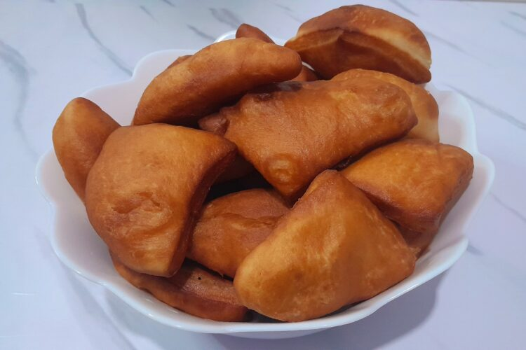

Mahamri (Swahili donut) Recipe

Description
This is a typical traditional recipe among the Swahilis. A true delicacy
enjoyed by the entire family, serves as a breakfast meal as well as a
whole day snack. Mahamri has a unique taste influenced by freshly squeezed
coconut milk.
Ingredients
- 3 ½ cups (525 g) wheat flour, refined
- ¾ cup (181 g) coconut milk
- 9 tbsp. (123 g) white sugar
- 1¼ tbsp. (12 g) dry yeast
- 1 tsp. (2 g) cardamom
- ¾ cups (182 g) water
- 8 1/8 cups (1735 g) cooking oil
Preparation 1 hour | Cooking 5 minutes | Serves 4
- Break the coconut shell, drain the water and grate the flesh.
-
Squeeze the coconut milk from the grated coconut flesh using a cloth
- Set aside the thick coconut milk.
- Add ¼ cup of warm water to squeeze out any remaining milk.
-
In a bowl, mix a pinch of sugar with the yeast and add the ¼ cup of
water used to squeeze the last batch of coconut milk Stir and set aside
for 5 minutes for the yeast to rise.
-
In a separate bowl, mix the dry ingredients; sugar, flour and cardamoms.
- Add the yeast mixture to the dry ingredients.
-
Add 4 tablespoons of oil and the thick coconut milk into the yeast and
dry ingredients mixture.
- Knead the dough as you add the remaining water to a firm feel
-
Set the dough aside for 10 minutes for sugar to dissolve. Cover with a
cloth
- Knead the dough again to mix the sugar and to improve the texture
- Cover with a dry cloth and allow to stand for 30 minutes.
-
Divide the dough into small-medium size balls. Set them aside and cover
with a dry cloth for 15 minutes.
-
When well raised, roll out each ball into flat discs and cut each into
four triangle shaped portions.
- Heat the remaining oil for 15 minutes to 173°C.
-
Fry the mahamri and turn after 40 seconds. The mahamri will turn golden
brown when ready.
-
Remove the first batch of mahamri from oil and place onto paper towels
to drain the oil.
- Continue frying the rest in batches until all are done.
- Serve as desired.
Home